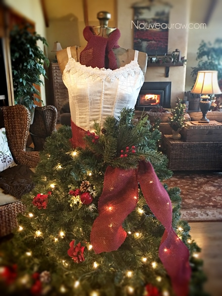
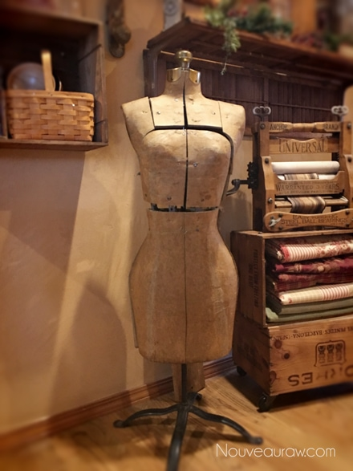
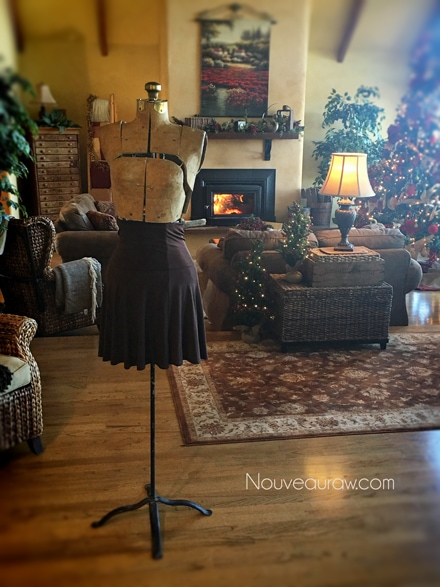
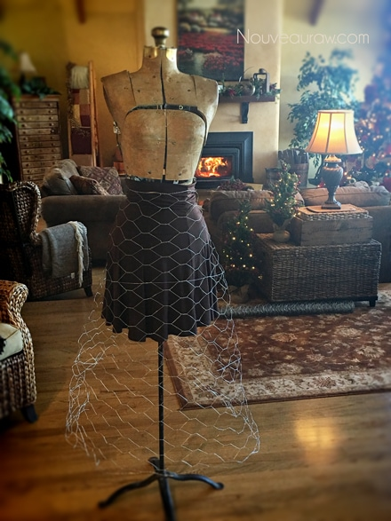
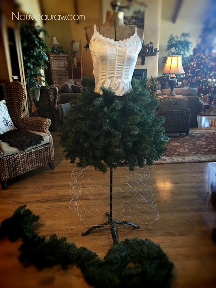
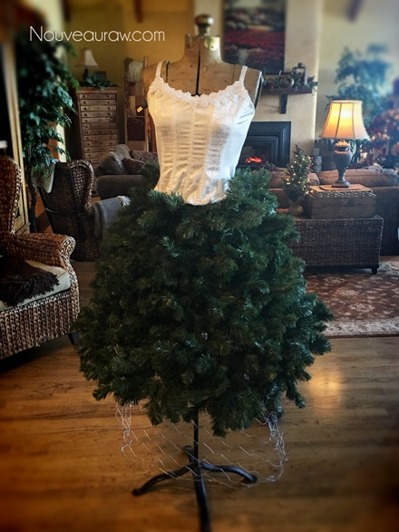
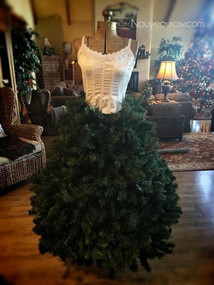
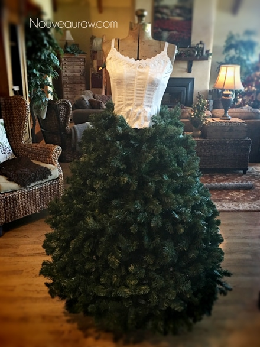
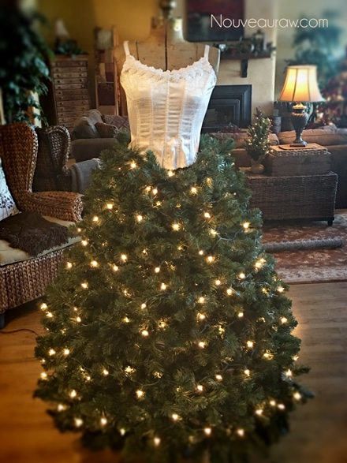

How to Create a Dress Form Christmas Tree
This year I created a Dress Form Christmas Tree. My inspiration came from my little sister who sent me a photo of one and said, “You must make one of these!” I agreed. It was right up my alley. I did a little research to see how they were made but couldn’t find anything, but I knew it couldn’t be that difficult. And now you will know too.
 You will need a dress form on a stand. I found mine through a private Facebook group that is a virtual garage sale for the area that I live in. It is an antique one which is what I have been looking for for quite some time. It was just meant to be.
You will need a dress form on a stand. I found mine through a private Facebook group that is a virtual garage sale for the area that I live in. It is an antique one which is what I have been looking for for quite some time. It was just meant to be.
You can purchase them on eBay and Amazon for good prices. I did a bit of research and narrowed it down to these two listed below (one is white, and the other is cream). I was ready to order, but then I came across the antique one which I liked even more. The one I got can be a tabletop or a 6′ tall dress form. In the end, you will want one that is or gets tall.
To create a “rigid” skirt form, I used chicken wire. The key is to purchase a heavier gauge wire that has smaller mesh openings. The one that I bought at ACE Hardware has like two-inch openings. It worked, but I can see that if you use a smaller opening, like one inch, it will make the skirt even that much more sturdy.
If you decide to go shopping at your local hardware store, you will need a minimum of 10 feet to wrap around her. Not for the waist but for it to flare out and create a hoop style skirt at the bottom. To cut the wire, you will need some sort of cutting pliers. Go raid the toolbox; they are pretty common. I will list a link to what one looks like below. That is all that you will need for “tools.” The rest is a decoration that matches your creativity! Oh, I did put a skirt on her that I had in my closet… just to protect the form from getting poked by the chicken wire.
For the pine-tree skirt, I used 6 (9 foot) garlands. Last year when all the Christmas decor went on sale after the holidays, I bought 10 of them for $2.00 apiece (normally $9.99). I had no idea how I was going to use them the following year, but I knew I would. Garland comes in different lengths, fullness, and quality. Check out the local craft stores for a selection to pick from. Just keep in mind that you will need approximately 45 feet in the end. You can use fresh pine garland if you so desire. I prefer the fake stuff… less mess, no fire hazard and is reusable, year after year.
For lighting and decoration, I went simple yet elegant. The possibilities are endless. I used 300 white lights on a green wire (important! Don’t use lights that are on white wires, it won’t look good). I then used some Christmas picks and some fake Christmas flowers, literally just poking them into the greenery. Very easy. I will post some links to a few that appeal to me, but use what you wish.
For the bodice of the dress form, I laced her up in one of my corsets. No need to purchase anything for this part, just go to your closet. You can use dress shirts, dresses, lacy tops, etc. To bring the top and bottom together, I used a deep red burlap ribbon to create a belt. To balance the color and texture of the ribbon, I tied a piece loosely around the dress form neck and tucked it into the corset top. Have fun with it! Trust me; I tried about four corsets on her before I made my final decision. You can use scarves, necklaces, or whatever sticks your fancy. My goal was to use whatever I had on hand. I hope you enjoy this posting and have a wonderful holiday! amie sue
Items required & needed:

Dress form:
Wire skirt:
Tools:
Garland skit:
- 45 feet of greenery – shop your local stores for the type of garland you like.
Decoration:
Regarding the decorations… I have a feeling you will already have some on hand to use, but if you need some ideas click (here).
This is the dress form that I used. I extended her to a full height
of 6 feet tall. A short one would be beautiful too; you will just
need fewer materials.

I slid a skirt over her just to protect the form from the chicken
wire. This is optional.

When dealing with the wire, wear gloves, so you don’t poke and
scratch yourself. Wrap the wire around the base of the waist,
making it tight around her center. This will cause the base
of the skirt to flare out some. That is what we want. Twist the
cut wire ends around the mesh opening to secure it into place.

Put the top clothing piece on once the mesh shirt is in place.

You are going to wrap the garland around and around the mesh
skirt. As you start with the first wrap around, every few inches,
twist the garland sprigs into the top of the wire mesh skirt. This
is your foundation in holding it into place, so be detailed here.
As you go around, you will be twisting the garland sprigs
together roughly every 6-10 inches. Don’t twist the garland to
the wire, otherwise, the skirt will form into an A-line skirt.

As you go around the skirt form, creating length to the skirt,
let the garland wrap around loosely to keep the flared shape.
Anytime you see a “hole” and can spot the mesh skirt, twist some
garland sprigs together to fill in the hole. It’s very easy and forgiving.

Create the desired length. It can be shorter or all the way to the
floor. Stand back every once in a while and access how things
are looking. I fluffed out the garland as I was putting it on her.

Now for the lighting. Start from the top, making sure that you
start with the female end of the string, so the male, plugin ends
up at the bottom of the dress. Since my dress form has sections
that can contract or expand, I have a stand of lights inside of her
to illuminate her bodice as well. I literally just walked around and
around her, placing the lights in amongst the garland. I didn’t
intertwine them, they just naturally nestled right in.

Decorate and enjoy! I recommend using timers for your
Christmas trees to conserve electricity.
© AmieSue.com